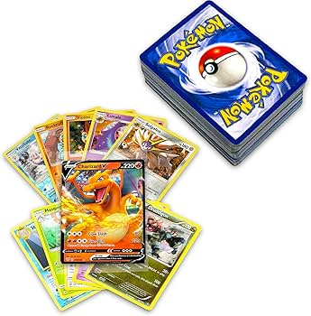
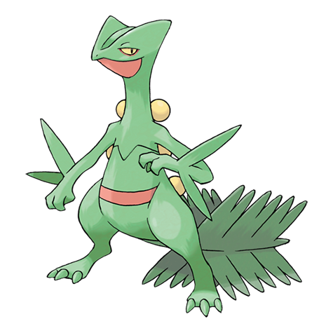
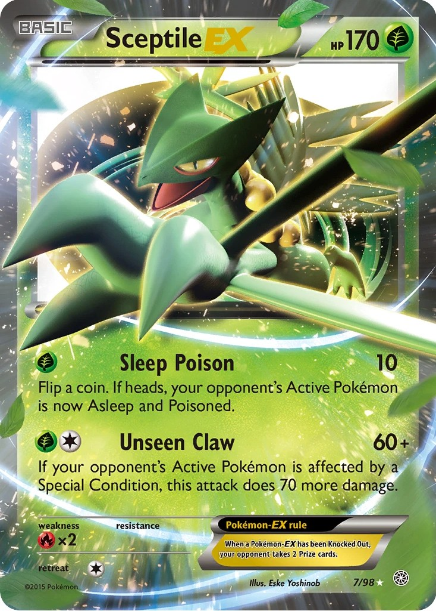
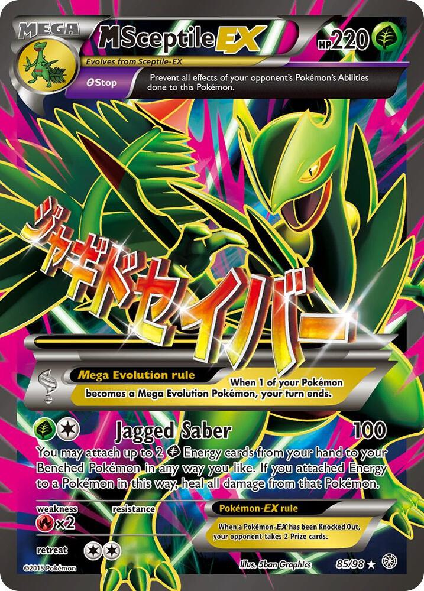
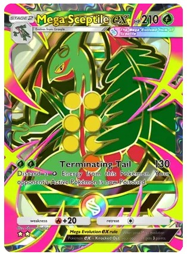
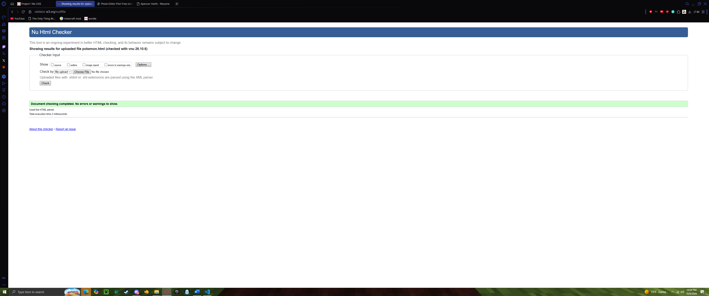

I have been a fan of the Pokemon since I was a kid after my uncle got me some cards for my birthday, ive been obsessed ever since. To this day I still play the games and collect the cards and this is something ill probaly do for a long time.

Out of over a thousand unique Pokemon, my absolute favorite is for sure Sceptile, also known asthe Forest Pokémon (#254). Sceptile was introduced in Generation III(my favorite generation)as the final evolution of the Hoenn Grass starter, Treecko. My Goat!

Below are three key Sceptile cards from the Pokemon Trading Card Game:
This is a normal Sceptile EX card I own and have had since I was a kid.

This is a Mega Sceptile EX card that I had also as a kid and have since lost, But it use to be in my battle deck and its the only card I ever beat my uncle with at the card game as a kid when we played

This is a rare Sceptile Star card from the pokemon pocket card game on phone, but it is at the top of my wishlist to add to my collection in the future.

Below is the audio clip for Sceptile pokemon cry, all pokemon have a cry/sound. Click to have a listen:
Below is the proof of W3C HTML validation for this page:
